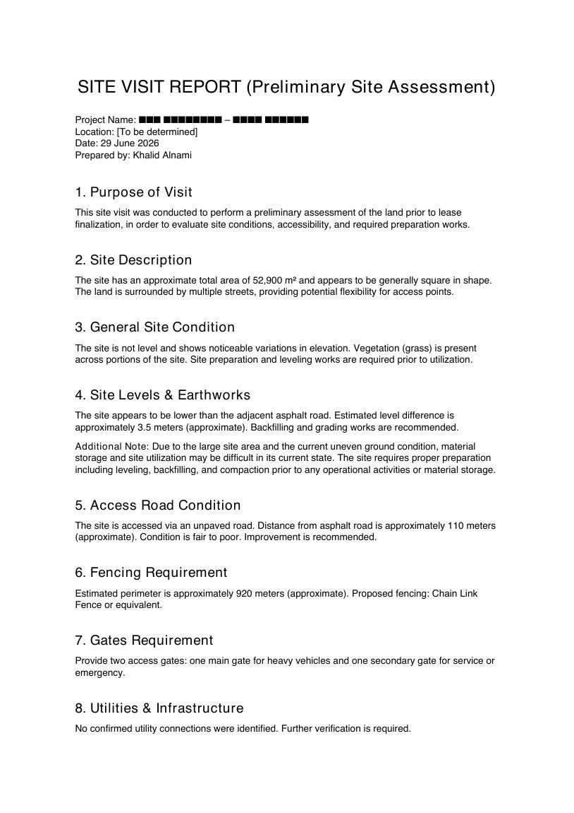
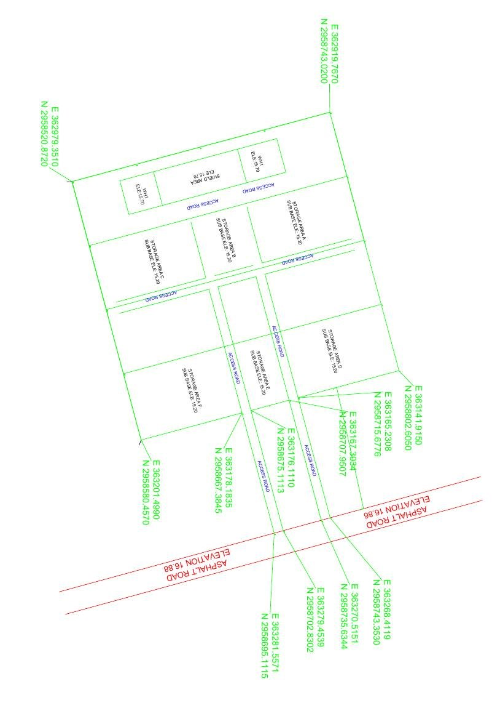
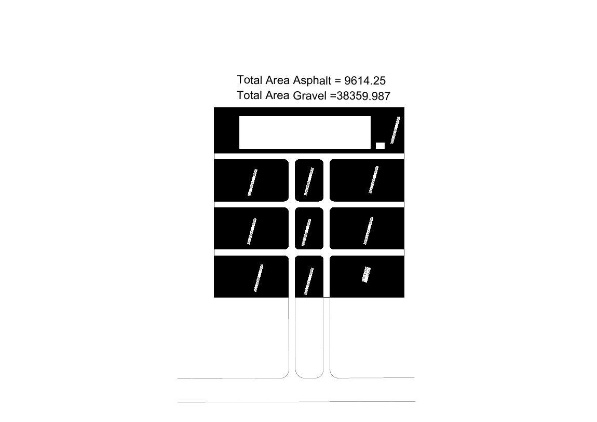

الملاحق
المبالغ بالريال كما طُبعت. «حساب» = حساب مُعِدّ التقريرالخطة والمقترحات والتكلفة.
- العقود وأوامر الشراء
- عروض الأسعار
- الفواتير والإيصالات
- المخططات والموقع
- المحاضر والمراسلات
- الأدلة المرئية
- مصادر التحقق
- سجل المواد
١. العقود وأوامر الشراء
- الأوامر الكبرى الثلاثة (15582 و15627 و15609): 3,001,136.00 قبل الضريبة · 3,451,306.40 شاملها (حساب).
- التزامات، وليست مدفوعات.
- 15582 و15627 موقّعان من الطرفين · 15609 بتوقيع المقاول فقط.
| المستند | الطرف والموضوع | التاريخ | قبل الضريبة (ريال) | الاعتماد | فتح |
|---|---|---|---|---|---|
| أمر شراء 15582-HV1694 | الأعمال الترابية: تسوية الساحة وردمها | 05-08-2026 | 697,434.00 | موقّع من الطرفين | |
| أمر شراء 15585-HV1694 | نسخة Word للنطاق والمقاول نفسيهما · نحو 54,660 م² (عرض المورّد 208) | 05-08-2026 | 697,434.00 | غير موقّع | |
| أمر شراء 15627-HV1694 | السور والمرافق (SAYCO): شبك مؤقت 920 م × 3 م، بوابتان، إنارة، كرفان حراسة | 13-08-2026 | 342,360.00مبدئي | موقّع من الطرفين | |
| أمر شراء 15609-HV1694 | المستودعان والمظلة (أمجاد اليوم): مستودعان مغلقان، مظلة، تكييف، كهرباء، كاميرات | 07-09-2026 | 1,961,342.00 | بتوقيع المقاول فقط | |
| أمر شراء 15366-0 | نخبة الحلول (Elite): Hik-Connect Teams، 360 قناة لسنة | 05.05.2026 | 45,403.20 | غير مثبت | Word في المكتبة |
| أمر شراء 15826-0 | نقل المياه: صهريج 12 م³ لدورات المياه | 2026-10-28 | 35,000.00سقف | معتمد من نسما | |
| أمر عمل 82 | نقل 170 حاجزاً خرسانياً إلى الجبيل | 22-11-2026 | بلا قيمة | بلا اعتماد | Word في المكتبة |
المصادر والتفاصيل
- 15582: شاملها 802,049.10 · الأمر ص 2 و11 · صدر في النظام 31.08.2026 (بريد 2026-09-03 15:18).
- 15585: شاملها 802,049.10 · الملحق 1 · خانات الاعتماد والقبول فارغة · علاقته بـ15582 غير موضحة · بريد 2026-07-30 07:56 حوّل ملفاً بالرقم نفسه باسم «Civil Works for Store yard area… signed»، ولا نسخة موقّعة في المكتبة.
- 15627: شاملها 393,714.00 · الأمر ص 3 و12 · سعر مبدئي قابل لإعادة القياس · المقاول: لا دفعة حتى 9 نوفمبر (بريد 2026-11-09 10:33).
- 15609: شاملها 2,255,543.30 · الأمر ص 3 و11 و12 · البند 7: 125 كاميرا × 750 = 93,750 قبل الضريبة، والكمية «to be finalized after finishing the old PO» · بند إطفاء اختياري 249,270.00 غير مفعّل · خانة اعتماد نسما فارغة · عُمّم للتنفيذ 2026-09-24 (بريد المشتريات) · لم يصدر رسمياً.
- 15366-0: شاملها 52,213.68 · نص الأمر، البند «Price» والملحق 1 · 10.51 للقناة شهرياً · دفع مقدم 100% · مرجعه «Quotation No. S00029 Dated 17th March» · على حساب Overhead – NIT · لا يذكر الجبيل، وصدر قبل أول ذكر مكتوب للمستودع (2026-06-18) (استنتاج: لا يشمله) · ملف Word بلا توقيع · الدفع والتفعيل غير مثبتين في البريد بعد 11 مايو ·
04-أوامر-الشراء-والعمل/01-أوامر-الشراء/2026-05-05_أمر-شراء-15366-0-نخبة-الحلول-ترخيص-Hik-Connect-Teams-360-قناة.doc - 15826-0: شاملها 40,250.00 · الأمر ص 1 و4 · سقف تقديري 100 رد × 350 · خانة إقرار المورّد فارغة.
- أمر العمل 82: 4 سطحات 13 م ورافعة شوكية 5 طن · النقل مسعّر في العرض 1054 · خانة اعتماد قائد وحدة الأعمال فارغة · الغرض (حماية السور) غير مكتوب ·
04-أوامر-الشراء-والعمل/02-أوامر-العمل/2026-11-22_أمر-عمل-82-نقل-170-حاجزاً-خرسانياً-إلى-الجبيل.doc
أوامر التغيير وفروقات الكميات على الأمر 15609 (غير معتمدة)
- مطالبة أعمال إضافية: 640,400.00 قبل الضريبة، ثم 659,200.00 بعد التعديل حسب التصميم.
- الفرق 18,800.00: خرسانة مسلحة للمنحدر.
- بلا تاريخ ولا توقيع ولا اعتماد.
٢. عروض الأسعار
- العروض ليست التزاماً.
- الأمر الوحيد المبني على عرض: 15366-0 (العرض S00029).
المراقبة والربط المركزي (نخبة الحلول)
| العرض | الموضوع | التاريخ | قبل الضريبة (ريال) | الحالة | فتح |
|---|---|---|---|---|---|
| S00029 | Hik-Connect Teams سحابي، 360 قناة لسنة · 11.96 للقناة شهرياً | 17-Mar-26 | 51,667.20 | انتهى 1-Apr-26 | |
| S00029 v2 | العرض نفسه بخصم Hikvision · 10.67 للقناة شهرياً | 17-Mar-26 | 46,094.40 | المعتمد | |
| S00030 | HikCentral Professional على سيرفر داخلي: ترخيص دائم + 54 ساعة تجهيز، دون السيرفر | 25-Mar-26 | 58,490.00 | لم يُعتمد | |
| S00043 v2 | صيانة سنوية لكاميرات 16 مستودعاً (410 كاميرا) · الجبيل ليس منها | 05/12/2026 كما طُبع | 180,400.00 | غير معروف |
إضافة الجبيل تحتاج عرضاً جديداً (العرضان منتهيان).
المصادر والتفاصيل
- S00029: شاملها 59,417.28 · حلّ محله v2.
- S00029 v2: شاملها 53,008.56 · تلاه الأمر 15366-0 (45,403.20 قبل الضريبة · 10.51 للقناة)، والأمر لا يذكر رقم النسخة.
- S00030: شاملها 67,263.50 · انتهى 9-Apr-26.
- S00043 v2: شاملها 207,460.00 · اسم الملف في المكتبة 2026-05-20.
- مراجع فنية: نشرة Hik-Connect for Teams · نشرة HikCentral Professional · متطلبات سيرفر HikCentral
الحواجز الخرسانية بعد الحادثة
| العرض | المنتج والكمية | التاريخ | قبل الضريبة (ريال) | ما ينقص | فتح |
|---|---|---|---|---|---|
| مسار الشام للمقاولات 000191 | حاجز 3 م، قاعدة 1 م: 400 × 950 + نقل 100 رحلة × 1,500 | 22/11/2026 | 530,000 | التنزيل، طول القطعة، التسليح، الصلاحية | |
| «شركة الوعد الغريب للصناعة» (قراءة المطبوع) 870 | حاجز سفتي 3 م، قاعدة 100 سم، جدار 30 سم: 1,000 × 1,050، شامل النقل للجبيل | 22/11/2026 | 1,050,000.00نقدي | المدة، التنزيل، طول القطعة | |
| مصنع النموذجية للخرسانة مسبقة الصنع (IPC) Q6115 | New Jersey مزدوج الوجه 3,000 مم: 800 م طولي × 730 | 23-11-2026 | 584,000.00 | التسليم في الدمام · التنزيل والتركيب · المدة والدفع | |
| أمجاد اليوم للمقاولات (بلا رقم ولا تاريخ) | حبات 1 م × ارتفاع 85 سم: 1,000 × 70، شامل التوريد | — | 70,000 | منتج منخفض، ليس بديلاً لحاجز 3 م | |
| أوتاد الشرق 1054 | نقل 170 حاجزاً موجوداً إلى الجبيل (أمر العمل 82) | 23/11/2026 | 11,600.00 | الاعتماد والسداد · التنزيل |
المقارنة بين العروض لا تصح بعد: الكميات والمنتجات مختلفة، ولا عرض يشمل التنزيل والتركيب · صورة الحواجز

المصادر والتفاصيل
- 000191: شاملها 609,500 · المدة 15 إلى 20 يوماً.
- 870: شاملها 1,207,500.00 · نقدي.
- Q6115: شاملها 671,600 (حساب) · موقع التسليم المكتوب الدمام · دون تنزيل وتركيب · المدة والدفع غير محددين.
- أمجاد اليوم: شاملها 80,500 · 70% مقدماً.
- 1054: شاملها 13,340.00 · Paid 0.00 · الاعتماد والسداد غير مثبتين · التنزيل غير مسعّر.
- الكميات: 400 قطعة، 1,000 قطعة، 800 م طولي · المصادر: العروض، قاعدة الحقائق §8.3.
خدمات الموقع
| العرض | الموضوع | التاريخ | قبل الضريبة (ريال) | الحالة | فتح |
|---|---|---|---|---|---|
| أوتاد الشرق: أمر عمل وعرض 1030 | صيانة 3 مولدات في المستودع | 2026-10-26 | 6,545 | الإتمام غير مثبت | |
| GAFA POWER S00518 | صيانة الكرفان: كهرباء، سباكة، صرف، تكييف، إنارة · 4 أيام عمل | 26 Oct 2026 | 42,000.00 | الاعتماد غير معروف | |
| مورّد الديزل QTE47 | توريد ديزل | 2026-11-23 | 1.60 للتر | انتهى يوم إصداره |
المصادر والتفاصيل
- 1030: تاريخ العرض 27/10/2026 · شاملها 7,526.75 · Paid 0.00 · المصدر ص 3.
- S00518: شاملها 48,300.00 · صلاحية 15 يوماً · شهادة إنجاز بتوقيع طرف واحد (المحاضر).
- QTE47: شاملها 1.84 · الشرط 4 يقول إن الأسعار شاملة الضريبة، ولا يتفق مع الجدول.
عروض أخرى قبل الحادثة (نقل ومعدات وتصميم) · الاعتماد غير معروف
| العرض | الموضوع | التاريخ | قبل الضريبة (ريال) | فتح |
|---|---|---|---|---|
| الطاقة العربية AEIS-EQTN-26-2570 | إيجار شهري لمولدين 500 و300 kVA مع لوحات وخزانات ديزل | 11-Aug-2026 | 33,100.00شاملها 38,065.00 · صلاحية 7 أيام | |
| المنارة الذهبية | مسح ومخطط معماري، وتصميم مخطط الدفاع المدني واعتماده | 20-8-2026 | 37,000لا دليل على الإصدار أو الدفع | |
| زاد العمران 260812 | سطحة وكرين 25 طن (تحميل): عسفان ← جنوب شرق الجبيل | 12/08/2026 | 9,800.00 | |
| زاد العمران 100285 | 10 رحلات تريلا 12 م × 8,000: 5 الدمام ← «SHIBA LOCATION» و5 «OMAN» ← الجبيل (كما طُبع) | 15/9/2026 | 80,000 | |
| زاد العمران 100303 | كرين 50 طن مع مشغّل وريقر، ولوبد لنقله من الدمام | 22/9/2026 | 6,600 | |
| زاد العمران 100322 | 3 سطحات 12 م وكرين 50 طن | 21/10/2026 | 24,000 | |
| زاد العمران 100323 | كرين 50 طن، رحلة واحدة | 21/10/2026 | 3,000 |
٣. الفواتير والإيصالات
| المستند | الجهة والموضوع | التاريخ | المبلغ (ريال) | ملاحظة | فتح |
|---|---|---|---|---|---|
| فاتورة ضريبية 197 | مورّد أدوات صحية | 2026-11-22 | 478.26 قبل الضريبة | ربطها بخزان الديزل استنتاج | |
| إيصال تحويل بنكي | من حساب شخصي لموظف | 2026/11/22 4:23 PM | 300 | الغرض الفعلي غير مذكور | |
| سند استلام ديزل 0032 | مؤسسة البشرى لنقل المواد البترولية | 6/11/2026 2:08 ص | بلا سعر | الكمية متعارضة | |
| كشف ذمم مدينة | الطاقة العربية (مؤجر المعدات): 7 فواتير على نسما | 28-Oct-2026 | 74,908.54 مستحقة | لا سداد حتى تاريخ الكشف | |
| تقرير رسوم انتظار الشاحنات | زاد العمران: 5 شاحنات في الدمام × 1,000 يومياً | 23-09-2026 إلى 27-10-2026 | 113,000 | سبب الانتظار غير مذكور |
المصادر والتفاصيل
- 197: شاملها 550.00 · نقدية · لا تذكر الخزان ولا الجبيل · ربطها بإصلاح مخرج خزان الديزل استنتاج من التاريخ.
- التحويل: الغرض المطبوع «حوالات شخصية» · تعدّه قاعدة الحقائق من المبالغ الصغيرة المدفوعة خارج القنوات الرسمية.
- 0032: المستلم «Security» · 1,117 لتراً في البريد، و«٣١١٧» في السند.
- كشف الذمم: منها 10,350.00 متأخرة.
- رسوم الانتظار: الإجمالي المطبوع، والعملة والضريبة غير مذكورتين · 3 شاحنات طوال المدة.
٤. المخططات والموقع

PDF · 5 صفحاتتقرير زيارة الموقع، 29 يونيو PDF · صفحة واحدةمخطط الردم للساحة
PDF · صفحة واحدةمخطط الردم للساحة PDF · 3 صفحاتمخطط الساحة
PDF · 3 صفحاتمخطط الساحة PDF · صفحة واحدةمخطط الساحة (A)
PDF · صفحة واحدةمخطط الساحة (A)
PDF · صفحة واحدةمناسيب طبقة البيس
PDF · صفحة واحدةمساحات الأسفلت والحصى
رسم مناطق التخزين والمباني · مخطط الساحة المفرد

صور إضافية (التاريخ من اسم الملف): رسم المستودع والتخزين والكاميرات (2026-07-27) · توزيع الكاميرات حول الساحة (2026-07-29) · صورة جوية للحدود بأربع نقاط (2026-09-09)
٥. المحاضر والمراسلات الرسمية
| المستند | المضمون | التاريخ | الحالة | فتح |
|---|---|---|---|---|
| تقرير زيارة الموقع المبدئية | تقييم الأرض قبل الاستئجار | 29 June 2026 | تقرير فني | |
| قائمة فحص NESMA-GAFA00030 وشهادة إنجاز | إنجاز صيانة الكرفان (S00518) | 28 October 2026 | توقيع طرف واحد | |
| نموذج مطالبة التأمين Erection All Risk | الخليج للتأمين · بعد إبلاغ التأمين 20 نوفمبر | 2026-11-23 12:12 | فارغ | |
| مذكرة مكتب المدير الإقليمي عن السرقة | البلاغ 11:47 ص · بلاغ الشرطة · تقدير أولي نحو 1,120 متراً | 2026-11-20 | بلا توقيع | PDF في المكتبة |
المصادر والتفاصيل
- زيارة الموقع (تقديرات التقرير): نحو 52,900 م² · أخفض من الطريق نحو 3.5 م · محيط نحو 920 م · نحو 110 م عن الطريق الأسفلتي · 5 صفحات.
- NESMA-GAFA00030: كهرباء، سباكة، صرف، تكييف، إنارة · موقّعة من نسما وحدها 02/11/2026 · خانة المقاول فارغة.
- نموذج التأمين: صفحتان و15 بنداً · رقم الوثيقة والتحمّل والمهلة غير معروفة.
- المذكرة: شرطة الجبيل البلد (د 1888457، ط 575016) · أُرسلت 2026-11-20 19:43 وأُعيد توجيهها 2026-11-23 10:33 · صفحة واحدة بلا اسم كاتب ·
01-التقارير/02-تقارير-المصدر/2026-11-20_مذكرة-مكتب-المدير-الإقليمي-عن-سرقة-مستودع-الجبيل.pdf
مراسلات مختارة (نصوص البريد)
- تذكير نهائي: توريد الحصى العاجل (2026-11-11 10:14)
- طلب عاجل: إصلاح فتحة السور (2026-11-21 09:30)
- إتمام إصلاح فتحة السور (2026-11-21 12:04)
- طلب اللوجستيات بنود حماية في أمر الشراء (2026-07-28 12:03)
- بلاغ سقوط السور: القاعدة خلاف المواصفات (2026-10-25 13:10)
- دعم السور وتثبيته غير مكتملين (2026-11-16 11:06)
السلاسل الكاملة: الوضع الحالي والملاحظات